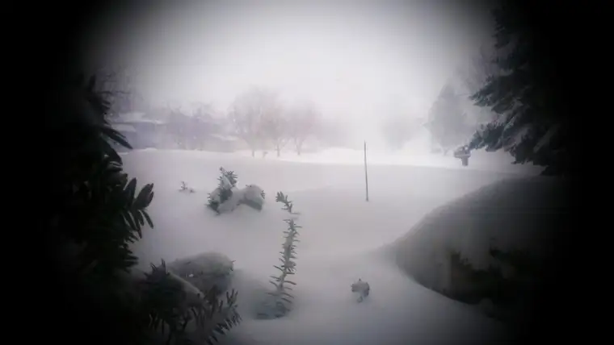

It’s the talk of the weekend around here — the blizzard of December 2008. Prairie Woman predicted it based on recent sundog appearances, even before I heard it forecasted by the local media. And here it is, just as it’s been forewarned over the past couple days. The impending blizzard that kept grocery stores humming and the 5 p.m. Saturday Catholic masses all over town filled to capacity (a healthy checking in with God before the blizzard hits) has arrived and is in full swing as I type.
{kind=link}
Several things always seem to come to the forefront for me during such times.
First, where are my chicklings? Today, four of the five are nestled in at home here, and I’m thanking the good Lord my husband doesn’t travel for a living. The fifth got “stuck” at a friend’s house but is safe; an elongated sleepover, much to her delight, I’m sure. During inclement weather, that mother-hen feeling comes on rather strongly. My main goal is to gather up my brood and keep them close in the shelter of my feathered wings. I call to mind the time I was working at a place where we were required to stay on duty during emergencies. When a tornado warning heralded, I was beside myself with anxiety that my children would be siphoned up into a funnel cloud, wondering why their mother wasn’t there to save them. Meanwhile, I’d be dutifully performing the tasks of an $8-an-hour job. I’m glad those days are gone, and I feel for other mothers who can’t be with their families on a day such as this for whatever reason.
Second, what about the homeless people of our northern cities? As I hear the wind and snow whip itself tirelessly against my window, bearing its snarling teeth like an provoked tiger attacking a predator, and as I imagine the frigid, relentless air turning everything it touches to icy stone, all from inside the warmth of my home, I feel anxious about those who wander the streets in these parts. Did all of them find safe haven? A blizzard such as this isn’t as simple a quandary as whether the fridge is well-stocked and the movie store visited. It’s a matter of life and death. I pray that everyone out there found safety.
Third, ever since discovering her during the researching and writing of P is for Peace Garden: A North Dakota Alphabet, I think of Hazel Miner, the North Dakota teen girl caught with her two younger siblings in a blizzard the spring of 1920 (for those who have it or are at the library, see additional information on the “I” page: “I is for Icy Cold Lakes that freeze in the wintertime, but introduce cocoa and skates, and we’ll weather the weather fine.”). Though she perished, Hazel saved her siblings by throwing her body on top of them and singing songs until her words finally fell quiet. Several years back, I had a chance to visit the monument at the Oliver County Courthouse erected on her behalf, and had the further privilege of being welcomed into the home of the little girl (in her 90s now, but age 5 at the time) who had been at the farmhouse the day Hazel’s frozen body was brought in from the cold. (Incidentally, Forum columnist Curtis Eriksmoen also wrote about Hazel in today’s paper.)
It is my hope, someday, to write more about Hazel, this North Dakota heroine and “Angel of the Prairie.” Her story, and another child blizzard story a friend lent me called The Children’s Blizzard by David Laskin, have alerted me to the true perils of prairie blizzards and reminded me that we must not think we are infallible when Mother Nature releases her fury. It might not be a volcano or tsunami, but a blizzard can claim lives, too.
If you live around here, please take cover, and stay warm and safe!